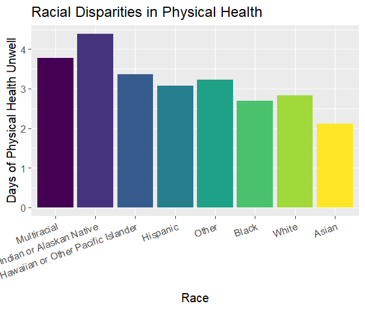
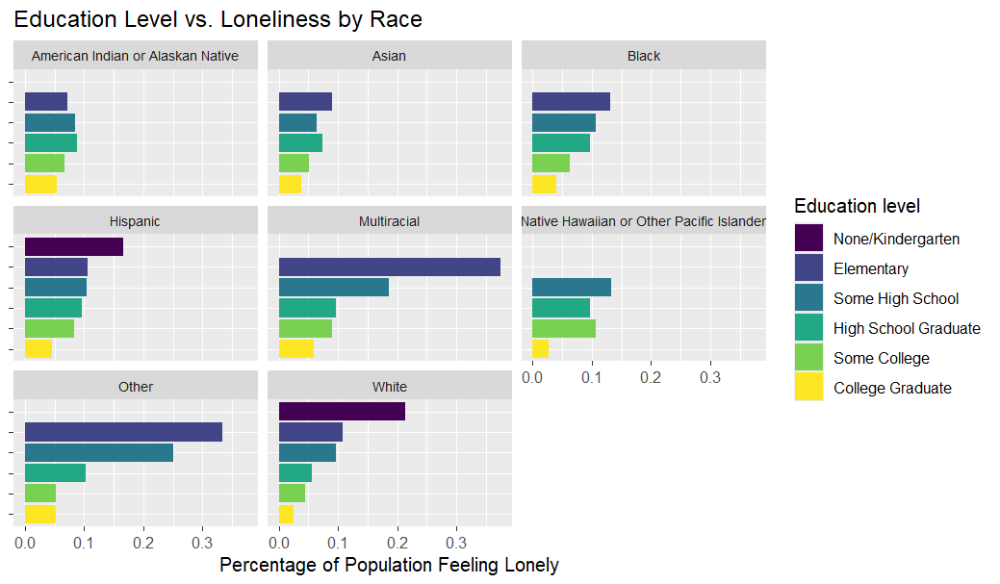
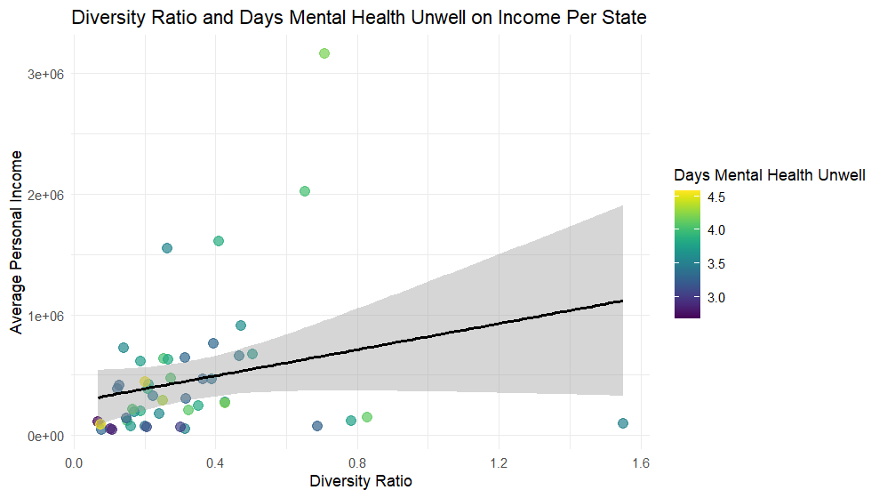
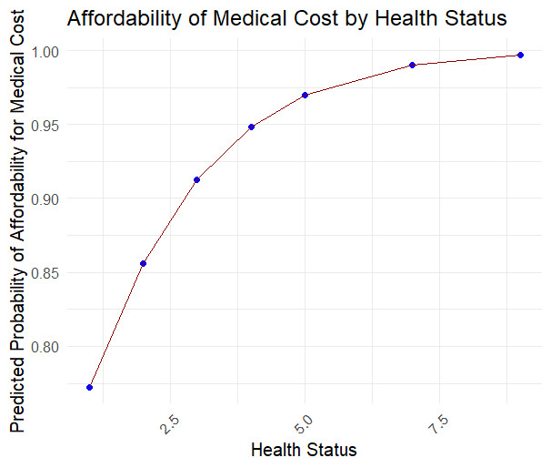
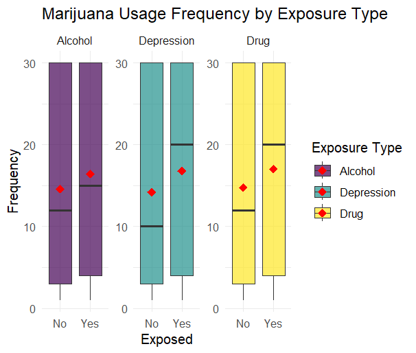

Analysis
Understanding the Influence of Socioeconomic Status and Social Determinants: A Comprehensive Analysis of Race, State-Level Variations, and Health Outcomes
Introduction
Physical and mental health outcomes are deeply influenced by a combination of factors, including the environment, access to health insurance, socioeconomic status, and lived experiences. These elements work together to shape people’s overall well-being, and current habits, and determine the opportunities and challenges individuals face in maintaining good health.
Motivation Behind Data Analysis
Driven by the desire to uncover the consistent patterns underlying disparities and inequities in physical and mental health, this analysis aims to explore the critical connections between socioeconomic status, social determinants, and their direct correlation with health outcomes. By analyzing various contributing factors, it seeks to identify the potential causes behind the differing patterns in physical and mental health. By analyzing these factors, this analysis aims to provide evidence-based insights that can inform policy decisions, promote equitable healthcare, and ultimately contribute to a more just society. The proposed thesis is that socioeconomic status and social determinants directly correlate to mental and physical health outcomes, with variations across states and race. The variables of interest are from the following categorizations:
The Identity-Based Category including State, Education level, and Race.
The Economic Category including medical cost, insurance status, income, ability to pay monthly bills.
The Health Category including Physical Health, Mental Health, Loneliness, Satisfaction of Life.
The Past Exposure Category including variables about answers for did you live with anyone who was depressed, mentally ill, or suicidal? Problem drinker or alcoholic? Or used illegal street drugs or who abused prescription medications?
The Current Behaviors Category including variables about marijuana using and Alcohol drinks per days.
Some questions that are explored include: How are education rates and loneliness rates related? Can we accurately predict the relationship between health status and affording medical costs? Does childhood exposure to negative social experiences affect current behavior? How does mental and physical health vary across different racial groups?
Data Findings
Racial Disparities in Health (mental and physical status)

Race is a critical factor influencing disparities in mental health outcomes, serving as a lens through which broader socioeconomic inequities and social determinants manifest. The graph illustrates significant racial disparities in mental health outcomes, as measured by the average number of days individuals felt mentally unwell last month.
The data suggests that groups with historically limited access to economic resources and healthcare—such as Multiracial individuals, American Indians, and Pacific Islanders—report poorer mental health, with an average close to or higher than 5 days of distress, compared to others. These patterns may possibly be due to the intersection of systemic inequities, such as economic instability, discrimination, and lack of healthcare access, which disproportionately affect certain racial groups. Conversely, groups with comparatively better access to resources and also with the highest average reported income (primarily in the income category $50,000 to < $100,000), such as Asians and Whites, report fewer days of mental health distress, with an average fewer than 3.5 days.

Similarly, the same trend holds for physical health outcomes as well. As the above bar graph demonstrates, physical health outcomes, as measured in the number of days the respondents felt unwell physically, also display racial disparities. Instead of the multiracial groups, American Indian or Pacific Natives (with an average of 4.4 days) now face the worst physical health outcomes. However, the top 3 racial groups that face the worst physical health outcomes are still those who face the worst mental health distress: Multiracial individuals, Native Americans, and Pacific Islanders. On the other hand, Asian, Black, and White individuals all have averages lower than 3 days. They experience better physical health than the other racial groups, which is consistent with their mental health outcomes. This parallel further highlights the disparity across social determinants and socioeconomic status among races, which leads to disparities in health outcomes.
Education and Loneliness Level
Education is a significant indicator for socioeconomic status, so it is used to investigate the specific link between socioeconomic status and health outcomes. Across all racial groups, the percentage of survey respondents reporting feelings of loneliness tends to decrease as education level increases. Since loneliness is a key predictor of mental health, a Poisson regression model is used to investigate the relationship between state income and loneliness on the number of days of mental health unwell last month. The predictor state income has undergone log transformations to correct the skewness. The variable loneliness has been filtered to keep only responses “Alway,” “Usually,” “Rarely,” and “Never.” Then, it is transformed into a binary variable. The coefficient for log(state GDP) is 1.861682, which shows that the predicted number of days with poor mental health per month is 543.45% higher for individuals who feel lonely compared to those who do not. Additionally, there are state-level variations: people living in wealthier states have 1.61% more predicted days of poor mental health per month than those in less affluent states with a coefficient of 0.015956. These results are all statistically significant.
These findings suggest that socioeconomic factors, such as education level, directly correlate with mental health through their impact on loneliness. This relationship is likely because respondents with higher education levels often report higher incomes and better life satisfaction, which are associated with lower levels of loneliness and, in turn, better mental health outcomes.
Socioeconomic Variations across States on Mental Health

There is a significantly moderate positive correlation (0.31) between the average personal income of a state and the diversity ratio of the state. This means that as a state becomes more diverse, the average personal income of the state increases, suggesting that diversity leads to better economic outcomes for each state. There is also a significantly positive correlation between the average personal income of a state and the average days that mental health is unwell. This means that as a state’s income increases, the average days that mental health is unwell for the population of that state also increases. Though this relationship is significant, it is important to consider that the range for average days that mental health is unwell per state ranges from about 3 to 5 days.
Overall, this data suggests that the diversity ratio of a state increases average personal income, which then increases the average days that mental health is unwell. Placing this information into a larger cultural context, this is more confirmation that higher diversity leads to higher income, as more diversity often leads to a greater variety of opinions and ideas that can lead to more innovation and therefore more economic growth. It is also understandable that the increase of personal income could cause larger stress in life, possibly related to maintaining the income to sustain the higher-income lifestyle created, which would lead to more days of decreased mental health.
Health Status and Affordability of Medical Costs

Based on the correlation analysis of medical costs, health status, and insurance status, we observe how socioeconomic factors influence health outcomes. A moderate positive correlation between medical costs and insurance status (0.2607) suggests that having insurance might lead to higher reported medical costs, likely due to better access to healthcare services. The positive correlation between health status and medical costs (0.1413) further indicates that while better health could reduce medical expenses.
Building on this, we developed a logistic regression model to predict the affordability of medical costs based on health status. The model reveals that as health status improves, the predicted probability of affording medical costs increases. The coefficient for health status in the regression model is 0.56291, indicating that a one-unit increase in health status leads to a significant increase in the log-odds of affording medical costs. By converting this coefficient to a percentage change, we find that a better health status corresponds to a 75.58% higher likelihood of being able to afford medical costs.
The plot clearly illustrates this trend, with the red line showing the relationship between health status and predicted affordability, while the blue points represent individual predictions. It reveals that individuals with poorer health are less likely to afford medical costs, whereas those in better health are more likely to do so. This supports our thesis that better health status correlates with better access to healthcare resources, emphasizing the impact of social determinants on individuals’ ability to manage medical expenses and their overall well-being.
Past Exposure and Current Consumption on Physical Health
 Respondents were asked to report the number of days they used marijuana over the past 30 days. The box plot illustrates the distribution of marijuana usage frequencies based on childhood exposure to specific conditions or behaviors. The y-axis represents the number of days marijuana was used in a 30-day period, while the x-axis indicates binary exposure levels: “Yes” for respondents who were exposed to a specific condition or behavior during childhood, and “No” for those who were not.
Mean values are represented by the red dots present in the images. The mean marijuana frequency across all exposure types is larger for respondents who indicated that they were exposed. For example, for alcohol exposure, the mean is 14.59 days for respondents who were not exposed and 16.43 days for respondents who were exposed. Median values show a similar pattern, with higher medians among respondents exposed to a condition or behavior. For example, the median for those not exposed to depression is 10, compared to 20 for those exposed. Participants who were exposed to various adverse childhood experiences are susceptible to higher usage for marijuana.
An ANOVA test was performed to assess whether the differences in results between the “Yes” and “No” options were statistically significant. There is a highly significant effect (p < 0.001) of exposure level on marijuana usage, meaning that if an individual is exposed to these conditions in childhood, they are more likely to show differences in marijuana usage frequency. Exposure type alone does not significantly influence marijuana usage, but exposure level is a strong predictor. Additionally, there is no significant interaction between exposure type and exposure level. This suggests that exposure to conditions in childhood has a significant effect on their marijuana usage, regardless of the specific type of exposure.
Thus, we emphasize that exposure to adverse behaviors during childhood has a significant likelihood of shaping current behavioral patterns, particularly concerning health and the impact of exposure to relatively unhealthy conditions. The results underline the importance of addressing and mitigating harmful exposures during childhood to reduce the likelihood of adverse health behaviors later in life.
Current Consumption on Physical Health
To examine the relationship between marijuana consumption and physical health, a logistic regression model was employed to assess how marijuana consumption frequency and the inability to pay bills impact physical health status. The variable inability to pay bills was included as a fixed effect as it is shown previously that socioeconomic status can be a significant factor for health status. Physical health status, which was a categorical variable, was transformed into a binary variable, with “1” representing poor health. The regression analysis reveals the coefficient for marijuana to be 0.041412, which indicates that a one-unit increase in marijuana consumption is associated with a 4.23% increase in the likelihood of experiencing poor health. Additionally, financial status plays a significant role: individuals unable to afford monthly bills, such as rent, are 169.16% more likely to report poor health compared to those who can afford their bills, with a coefficient of 0.990144. These findings underscore that, beyond medical costs, other financial stress and one’s personal behaviors are strongly directly correlated with health outcomes, whereas their current behavior is influenced by past exposures. Overall, the results highlight the broader link between socioeconomic status and social determinants with physical health.
Limitations:
As with all research regarding surveys, there is always a potential for biased and inaccurate responses. For example, for variables such as PHYSHLTH and MENTHLTH, people might over or under report the days they felt unwell physically or mentally.
There was an exclusion of two states and 12 territories which does not give a complete understanding of these variables across the whole U.S. population, although the data is quite comprehensive.
The lack of proxy interviews restricts data collection from individuals with disabilities who need guardians to report on their behalf, as well as from those without phones. Furthermore, the absence of TTY services or accommodations for individuals who are deaf or hard of hearing may result in the exclusion of these populations.
For the regression analysis, some data was filtered out to build a binary variable, which may result in the loss of valuable insights and fail to represent the entire dataset. Additionally, the models did not include many predictors, which could lead to an overestimation of the coefficients.
The marijuana use and adverse childhood exposure plot relied on binary data, without details on the depth or frequency of exposure, making it impossible to quantify how much exposure leads to these effects.
Attributions